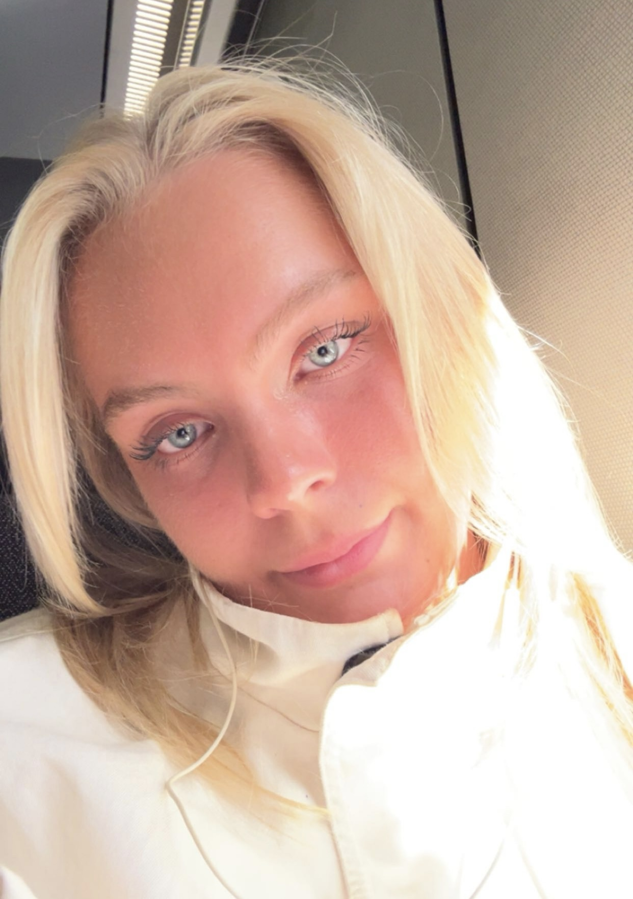

Velkommen til mit portfolio

Jeg er 23 år og studerer IT-arkitektur på Erhvervsakademi København. Jeg interesserer mig for informationsteknologi, design, forretning og mennesker, og kan godt lide at lære nye ting såvel som at udfordre mig selv.
På denne hjemmeside kan du lære lidt mere om, hvem jeg er, mine erfaringer og den baggrund, jeg har med mig.
Jeg håber du har lyst til at kigge dig lidt omkring!
Om mig
Jeg er en dansk/engelsk pige på 23 år. I starten af august (2026) flyttede jeg til København fra Esbjerg af, og bor nu på Østerbro med min roomie Emma.
Som person er jeg positiv, nysgerrig, målrettet og nyder at arbejde sammen med andre, men trives også godt med at arbejde selvstændigt og tage ansvar for mine egne opgaver.
Jeg valgte at studere IT-arkitektur, fordi uddannelsen kombinerer flere af de områder, jeg interesserer mig for. Informationsteknologi er et nyt område for mig, og jeg synes, det er spændende at lære mere om en branche, som hele tiden udvikler sig og får større betydning for vores hverdag.
Samtidig har jeg en højere handelseksamen, hvor jeg blandt andet har fået erfaring med forretning og forbrugeradfærd. Derfor synes jeg, det er spændende, at IT-arkitektur giver mig mulighed for at kombinere min eksisterende viden om forretning med et helt nyt fagområde. Jeg er stadig i begyndelsen af min IT-rejse og glæder mig til at se, hvor den fører mig hen.
I min fritid nyder jeg at være social og bruge tid sammen med de mennesker, jeg holder af. Jeg kan også godt lide kreative projekter, hvor jeg blandt andet maler og spiller klaver.
Når jeg har tid, gamer jeg på min PlayStation eller spiller The Sims på computeren. Jeg holder også meget af at være aktiv. Jeg har tidligere dyrket kickboxing på eliteniveau, så det falder mig naturligt at holde mig i gang.
Faglig profil
Jeg er en ansvarsbevidst, imødekommende og engageret person med erfaring inden for service, salg, kundekontakt og pædagogisk arbejde.
Jeg trives med at arbejde med mennesker og er god til at skabe positive relationer gennem en åben og venlig tilgang. Jeg arbejder struktureret og selvstændigt, men sætter samtidig stor pris på godt teamwork.
Gennem mine tidligere jobs har jeg lært at tage ansvar, være fleksibel og bevare overblikket – også når der er travlt. Jeg er lærenem, mødestabil og motiveret for hele tiden at udvikle mig.
Kompetencer
- Detaljeorienteret
- Omsorgsfuld og empatisk
- Lærenem
- Omstillingsparat
- Ansvarsbevidst
- Højt servicegen
Uddannelse
Professionsbachelor i IT-arkitektur
Erhvervsakademi København, Nørrebro
August 2026 – igangværende
Højere handelseksamen
Rybners Gymnasium, Esbjerg
August 2019 – Juni 2022
Folkeskole
Esbjerg Realskole
August 2009 – Juni 2019
Erfaring
Pædagogmedhjælper
Børnehuset Bøndergårdsvej, Esbjerg
Juni 2023 – August 2026
Tjener
Huset Gammelhavn, Esbjerg
Oktober 2022 – Juni 2024
Lærervikar
Kvaglund skole, Esbjerg
August 2022 – Juni 2023
Salgsassistent
Pilgrim, Esbjerg
September 2021 – Juli 2022
Køkkenmedhjælper
Bone’s, Esbjerg
August 2020 – August 2021
Servicemedarbejder
Coop 365, Esbjerg
Maj 2019 – August 2020
Frivilligt arbejde
Spilopperne
Frivillig på krisecenter, Esbjerg
August 2024 – August 2026
I to år var jeg frivillig på Esbjergs krisecenter. Her kom jeg hver anden uge, hvor jeg stod for leg og forskellige aktiviteter for børnene på krisecenteret. Det gav mig erfaring med at skabe trygge rammer og møde børn med forskellige behov.
Tanzania
Frivillig på skoler og børnehjem
Marts 2024 – Juni 2024
På min rejse til Tanzania brugte jeg en stor del af tiden på frivilligt arbejde på lokale skoler og børnehjem i nærområdet. Sammen med mine medrejsende hjalp jeg også til i den lokale landsby med forskellige praktiske gøremål.
Opholdet gav mig mulighed for at opleve en anden kultur og hverdag, samtidig med at jeg kunne bidrage med min tid og hjælpe, hvor der var brug for det.
Projekter
Portfolio hjemmeside
September 2026
Mit første projekt på IT-arkitektur, hvor jeg arbejder med HTML, CSS, visualisering, æstetik og projektstyring. Formålet er at skabe en personlig portfolio, som både præsenterer mig og kan udvikle sig sammen med mine kompetencer gennem uddannelsen.